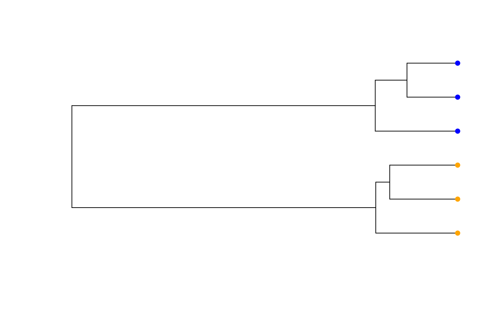

Get tip coordinates
get.tip.coords.RdAfter generating a phylogram plot, this function returns the coordinates of the tree tips on the plotting surface, useful for plotting images or other symbols at the ends of the tree plot.
Details
The phylogram plot type from the ape package invisibly stores the
tip coordinates of the plot. This function retrieves them and returns them
as a matrix useful for adding symbols or images to the leaves of the tree.
Examples
#Make a matrix
dmat <- matrix(
c(1, 1, 1, 0, 0, 0,
1, 1, 1, 0, 0, 0,
1, 1, 1, 0, 0, 0,
0, 0, 0, 1, 1, 1,
0, 0, 0, 1, 1, 1,
0, 0, 0, 1, 1, 1
),6,6)
#Noise it up
dmat <- dmat + matrix(runif(36)/2,6,6)
#Compute a cluster analysis
hc <- stats::hclust(stats::dist(dmat))
pt <- ape::as.phylo(hc)
#Cut tree to give two clusters
clusts <- stats::cutree(hc, 2)
#Make plot with no tip labels
plot(pt, show.tip.label = FALSE)
#Add colored points to tips
points(get.tip.coords(), pch = 16, col = c("orange", "blue")[clusts])
